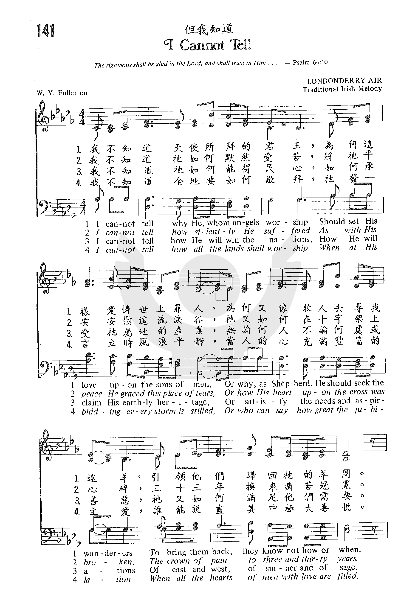
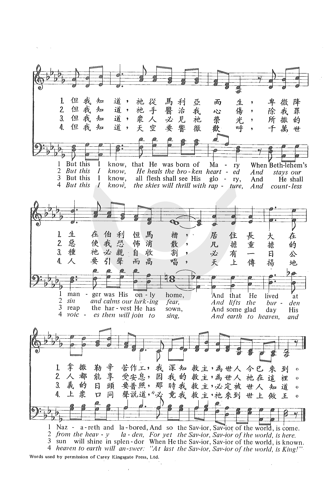
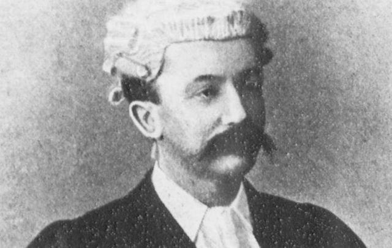

1395 I Cannot Tell 難以解釋 LONDONDERRY AIR
|
|
|
1 I
cannot tell why he, whom angels worship,
should set his love upon the sons of men,
or why, as Shepherd, he should seek the wanderers,
to bring them back, they know not how or when.
But this I know, that he was born of Mary
when Bethl'em's manger was his only home,
and that he lived at Nazareth and laboured,
and so the Saviour, Saviour of the world, is come.
2 I cannot tell how silently he suffered,
as with his peace he graced this place of tears,
or how his heart upon the cross was broken,
the crown of pain to three and thirty years.
But this I know, he heals the broken-hearted
and stays our sin and calms our lurking fear
and lifts the burden from the heavy laden;
for still the Saviour, Saviour of the world is here.
3 I cannot tell how he will win the nations,
how he will claim his earthly heritage,
how satisfy the needs and aspirations
of east and west, of sinner and of sage.
But this I know, all flesh shall see his glory,
and he shall reap the harvest he has sown,
and some glad day his sun will shine in splendour
when he the Saviour, Saviour of the world, is known.
4 I cannot tell how all the lands shall
worship,
when at his bidding every storm is stilled,
or who can say how great the jubilation
when every heart with love and joy is filled.
But this I know, the skies will thrill with rapture,
and myriad myriad human voices sing,
and earth to heav'n, and heav'n to earth, will answer,
'at last the Saviour, Saviour of the world, is King!'
Source: Ancient and Modern: hymns and songs for refreshing worship #666
|
- 我不知道天使所拜的君王，為何這樣愛憐世上罪人，
為何又像牧人四出找迷羊，引領牠們歸回祂的羊圈。
但我知道，祂從馬利亞而生，卑微降生在伯利�痚釆恁A
居住、長大、並在拿撒勒勞動，如此我救主、普世救主到人間。
- 我不知道祂如何默然受苦，將祂平安，安慰這流淚谷；
祂又如何在十字架上心碎，三十三年換來痛苦冠冕。
但我知道，祂手醫治我傷心，除我罪惡，使我恐怖消散，
叫凡擔重擔的人得享安息，因我的救主、普世救主在這裡。
- 我不知道祂如何能得民心，如何承受祂屬地的產業；
無論何人，或東、或西、或善、惡，祂又如何滿足他們需要。
但我知道，眾人必見祂榮光，所撒種子，祂必親臨收穫，
必有一日，公義日頭要普照，那時我救主、普世救主被知道。
- 我不知道全地要如何敬拜，祂發一言，立時風浪平靜；
當人的心豐盈充滿著主愛，誰能說盡此中極大喜悅。
但我知道，天空要響徹歡呼，千萬世人要引聲而高唱，
天上傳聲，地上眾口同說道：「究竟我救主，普世救主來作王。」
|
|
|
https://www.zanmeishige.com/tab/25476.html?songbook=1&index=141


https://www.zanmeishi.com/tab/25476.html
 |
| |
|
http://www.hymncompanions.org/Apr/23/stream.php
但我知道
I Cannot Tell
我不知道天使所拜的君王，為何這樣愛憐世上罪人，
為何又像牧人去尋找迷羊，引領他們歸回祂的羊圈，
但我知道，祂從馬利亞而生，卑微降生在伯利恆馬槽，
居住長大在拿撒勒辛苦作工，我深知救主，為世人今已來到。
我不知道祂如何默然受苦，將祂平安安慰這流淚谷，
祂又如何在十字架上心碎，三十三年換來痛苦冠冕。
但我知道，祂手醫治我心傷，除我罪惡使我恐怖消散，
凡擔重擔的人都能享受安息，因我的救主，為世人祂在這�堙C
我不知道祂如何能得民心，如何承受祂屬地的產業，
無論何人不論何處或善惡，祂又如何滿足他們需要。
但我知道，眾人必見祂榮光，所撒的種祂必親自收割，
必有一日公義的日頭要普照，那時我救主，必定被世人知道。
我不知道全地要如何敬拜，祂發一言立時風浪平靜，
當人的心充滿豐富的主愛，誰能說盡其中極大喜悅，
但我知道，天空要響徹歡呼，千萬世人要引聲而高唱，
天上傳揚地上眾口同聲說道，’必竟我救主，祂來到世上做王。
 (請點耳機收聽)
(請點耳機收聽)
這首詩歌的歌詞是傅樂敦（William Y. Fullerton 1857-1932）在1920年所寫。他是浸信會的名牧。這是他最有名的一首聖詩。

1996年白博侃 （Ken Bible 1950 - ）因它得靈感用同一調寫了以下的另一首「難以解釋」（I
Cannot Tell），其歌詞如下：
難以解釋
I
Cannot Tell
難以解釋為何高天的君王，
寧願捨棄永遠福樂平安，
至聖上主看輕尊貴與榮華，
離開父神為要來尋找我。
但我知道寂靜必變為歌唱，
天上榮光驅走心中幽暗，
救主耶穌甘謙卑降世為人，
神愛世人，基督今天為我而生。
難以解釋為何高天的喜樂，
寧願為我捨身代罪受刑，
至聖善神仍愛我這個罪人，
甚至犧牲讓我與祂親近。
但我知道基督救主已復活，
讚美主名，祂活在我裡面！
因祂復生，祂給我永遠生命！
除去罪孽，釋放心靈，使我更新！
難以解釋上主統管普天下，
如何選召祂喜悅的子民，
難以形容神聖的歡欣快樂，
屬神兒女齊集主寶座前。
但我知道祂彰顯至高榮耀，
天地震動，歌聲響遍萬方，
就在那天，基督要從天降臨，
救主耶穌必得勝利，永遠作王！
白博侃在在十歲時，開始隨母親跪在床前禱告，中學時，曾在晚堂崇拜中當過講員，大學時主修作曲，他曾為教會寫作數曲，但他並沒有感受到神的呼召。
白博侃萬萬想不到，一次陪他妻子去參觀室內設計的展覽會，使他的靈程有了重大的轉捩。
他在李理納出版公司工作了十九年，編審了無數聖樂，但始終覺得世人根本漠視基督教的傳播產品和教會的社團，他覺得自己很難擠身其間，將福音傳給不信者，因此他很沮喪，靈命處於低潮。
那天在展覽的會場中，他無心瀏覽那些展出，卻注意到：熙熙攘攘的人群都在尋找一個使自己更滿意的生活環境。
在歸途中，他又看到在電器用具店內，擁擠著人在尋找娛樂器具；運動器材店內擠滿了人在找消遣器材；再經過一大書店時，也見到處是人在尋求知識。
白博侃意識到這些人都在尋找可使他們生活更充實的東西，而他將如何和他們分享耶穌，可使他們生命得到豐富與滿足。 他想到約翰一書2:6「人若說他住在主裡面，就該自己照主所行的去行。」所以他該照主所行的去行。
幾天後，神為他預備了良機，他所屬的教會發起逐家親鄰運動，每年探訪數百個家庭。白博侃每月為未信主者設計二種單張，為了充實自己，他自修希臘文，繼而希伯來文。
白博侃在當主日學老師時，想到如何能將深奧的聖經意念，簡易地傳達給一般人，他發覺詩歌可以表達生命之道。雖多年來他有寫詩歌的心志，但是家庭及工作一直是前提。
這時他年近四十歲，他感到神的時間到了，他要完全獻上。
他覺得過去研讀聖經真理，律己遵行並不是最重要的，而是祇要每一天過完全信靠的生活。
當他與主更親密時，他也發覺他的詩歌更能感人，因為這一切都出自他內心深處和親身的經歷。 因此他見證說：「要透徹聖經的奧秘必需學自實習。」
這首詩歌取調愛爾蘭民謠 Londonderry Air（又名 Danny Boy）。
中英文聖詩集參考
英文歌名 I
Cannot Tell
教會聖詩 141
歡欣讚美 354
聖徒詩集 156
恩頌聖歌 206
世紀讚頌 226
校園詩歌I 284
但我知道 「我雖行在患難中，你必將我救活。」詩138:7
https://en.wikipedia.org/wiki/William_Young_Fullerton
From Wikipedia, the free encyclopedia
https://www.methodist.org.uk/our-faith/worship/singing-the-faith-plus/hymns/i-cannot-tell-why-he-whom-angels-worship-stf-350/
William Fullerton’s words take as their starting point words from the Gospel of John
4: 42 (“This
is indeed the Christ, the Saviour of the world”). Each verse follows the same
journey, from near-incomprehension to declaration of faith.
The verses each acknowledge that we cannot not understand fully the way in which
God works, and (in verse 2) that it is almost impossible for us to relate wholly
to Christ’s act of self-sacrifice. Nevertheless, writes Fullerton, there are
things we wish to proclaim out of faith: that God became real in Bethlehem’s
manger (verse 1); that God’s presence will outlast our experience of the world
as we know it (verse 3); and that the love Jesus demonstrated in his life and
death will win out completely (verse 4).
And each time we make that move from questioning to proclaiming (“this I
know…”), Londonderry Air carries us onwards and upwards, building in confidence
from the tune’s halfway mark to the most emphatic, high top notes that you’re
likely to encounter in Singing the Faith. Supported by this powerful surge of
melody, we sing what we know: “that he lived at Nazareth” (v.1); “and lifts the
burden from the heavy-laden”; “and some glad day his sun shall shine in
splendour”;
and earth to heaven, and heaven to earth, will answer:
‘at last the Saviour, Saviour of the world, is King!’ (v.4)
 William
Young Fullerton
William
Young Fullerton
William Fullerton was raised as a Presbyterian in Ireland. Later, he moved to
London, joined Spurgeon’s Tabernacle and subsequently trained for the Baptist
ministry.
Londonderry Air (sometimes simply “Air from County Derry”) was said to have been
collected by Jane Ross of Limavady. It was included in The Ancient Music of
Ireland (1855), edited by George Petrie. Jane Ross was unable to name the piper
that she heard play the tune, which, in any case, wasn’t in a metre suitable for
any other known Irish songs of the time – which has led some to doubt its
authenticity. However, it does bear a strong similarity to the authenticated
tune of another Irish song, The
Young Man's Dream,
included by the pioneer collector of harp music, Edward Bunting, in his
Collection of the Ancient Music of Ireland (1840) .
The story of Londonderry Air is drawn from Michael Robinson’s article, Danny
Boy – the mystery solved.
https://wordwisehymns.com/2017/04/12/i-cannot-tell/
Words: William Young Fullerton (b. Mar. 8, 1857; d. Aug. 17, 1932) Music:
Londonderry Air (an ancient folk tune from Northern Ireland)
Links: Wordwise Hymns The Cyber Hymnal Hymnary.org
Note: William Fullerton came to Christ through the ministry of Charles
Spurgeon. He became a popular devotional speaker himself. And he wrote a hymn in
1929 that weighs things known and unknown about the Lord Jesus Christ. Before we
look at the message of the words, a comment about the tune.
Fullerton, an Irishman, set his text to Londonderry Air, an old folk tune
from Northern Ireland (Londonderry being a county there). The tune was first
published in The Ancient Music of Ireland, in 1855. It has been described as the
most perfectly crafted melody ever written. In 1910, it became the setting for
Danny Boy, a popular ballad by Frederic Weatherly, but it also has become the
tune for several hymns.
I Cannot Tell, by William Fullerton (1857-1932) Above the Hills of Time, by
Thomas Tiplady (1882-1967) I Would Be True, by Howard Walter (1883-1918)–a fine
alternate tune for this hymn He Looked Beyond My Fault, by Dottie Rambo
(1934-2008)
Questions are important. They are the gateways to learning and discovery.
Journalists use them all the time. A poem by Rudyard Kipling lists six key words
used to query and investigate.
I keep six honest serving-men (They taught me all I knew); Their names are
What and Why and When And How and Where and Who.
There are some questions, however, that either have no answer, or the answer
persistently evades the seeker.
What are called rhetorical questions (such as, “Why me?”) don’t necessarily
expect an answer at all. They’re used for dramatic effect.
Riddles and brain-teasers are posed for the sake of entertainment.
Other inquiries take a humorous tack. For instance, how does “nonstick”
Teflon stick to a frying pan? On the other hand, why doesn’t glue stick to its
container?
But, more seriously, there are things seen in nature for which science may
have theories, but few answers. We know more now that we did in years past, but
some things continue to challenge researchers. Why is yawning contagious? Why
are there left-handed people? Why are moths drawn to the light? Why do cats
purr? Why do we have fingerprints?
As to the Bible, someone has counted 3,294 questions there. Clearly God
wanted us to think about what we read in His Word, as many of the queries touch
on significant spiritual concerns. “Am I my brother’s keeper?” asked Cain (Gen.
4:9), and yes, we are responsible for one another (Heb. 10:24). And when Moses,
as God’s spokesman, asked for the release of the enslaved Israelites, arrogant
Pharaoh replied, “Who is the Lord, that I should obey His voice?” (Exod. 5:2).
He was soon to find out!
When the Lord Jesus asked His followers, “‘Who do you say that I am?’ Simon
Peter answered and said, You are the Christ [the Messiah], the Son of the living
God’” (Matt. 16:15-16). Later, there was dithering Pilate asking, “What then
shall I do with Jesus?” He wanted the opinion of the crowd before him as to
whether to execute Christ, or let Him go. But his words confront each one of us
still. What has each of us done with the claims of Christ?
Questions focusing on Christ are the most important we’ll ever face, because
our answers will affect our eternal destiny. When a Philippian jailer asked Paul
and Silas, ““Sirs, what must I do to be saved?” they said, “Believe on the Lord
Jesus Christ, and you will be saved” (Acts 16:30-31; cf. Jn. 3:16). That is
specific and certain. But there are unanswered and unanswerable questions about
God’s salvation. Even if we believe God’s promise and trust in the Saviour, that
is so.
Christ spoke to a Pharisee named Nicodemus, and puzzled him greatly. Jesus
said, “Most assuredly, I say to you, unless one is born again, he cannot see the
kingdom of God.” And Nicodemus asked, “How can a man be born when he is old? Can
he enter a second time into his mother’s womb and be born?” (Jn. 3:3-4). The
Lord’s response suggests the work of God’s Spirit is beyond our comprehension.
We can see or experience the results, but still not understand it (vs. 8).
Here is some of Mr. Fullerton’s hymn about the Lord Jesus.
CH-1) I cannot tell why He whom angels worship, Should set His love upon the
sons of men, Or why, as Shepherd, He should seek the wanderers, To bring them
back, they know not how or when. But this I know, that He was born of Mary When
Bethlehem’s manger was His only home, And that He lived at Nazareth and laboured,
And so the Saviour, Saviour of the world is come.
CH-2) I cannot tell how silently He suffered, As with His peace He graced
this place of tears, Or how His heart upon the cross was broken, The crown of
pain to three and thirty years. But this I know, He heals the brokenhearted, And
stays our sin, and calms our lurking fear, And lifts the burden from the heavy
laden, For yet the Saviour, Saviour of the world is here.
Questions: 1) What are some questions about God’s salvation for which you
have no answers?
2) What are some things about God’s salvation about which you have strong
confidence?
https://www.wrti.org/post/mysteries-behind-beloved-irish-ballad-danny-boy
ShareEmail
WRTI looks at the origins of this famous ballad, its mysteries, and
why it is sung to convey deeply felt emotion and love during times
of mourning.
Although the song “Danny Boy” has come to symbolize the Irish
Diaspora and Irish national pride, its author was not Irish at all.
Frederic Edward Weatherly (1848-1929) was a busy English lawyer who
also wrote novels, children’s books, libretti, and the lyrics to
some 1500 ballads and songs.

“Holy City” and “Roses of Picardy” are among his most popular
creations, but none captured the world’s imagination like “Danny
Boy.”
Weatherly penned the two stanzas of “Danny Boy” in 1910. His words
did not find their musical counterpart until a couple of years
later, when his Irish sister-in-law sent him the music to a folk
tune she’d heard, hoping he could write lyrics for it.
Perhaps not realizing that the tune had been set by some 90 other
lyricists, or that Australian composer Percy Grainger had a few
years earlier orchestrated an arrangement of it, Weatherly decided
his “Danny Boy” would fit this tune perfectly. His publisher Boosey
accepted his marriage of words to tune; paired, words and melody
achieved a success that neither could have reached on their own.
Mystery surrounds the origins of the tune itself. Some say a Celtic
harpist played it as early as the 1600s. Others say it originated in
the Scottish Highlands. It first appeared in print in George
Petrie’s Ancient
Airs of Ireland, in which Dr. Petrie credited a Miss Jane Ross,
of County Derry (also known as County Londonderry,) Ireland, for
notating this “Londonderry Air” after hearing it played by an
unnamed blind fiddler.
But perhaps the greatest mystery about “Danny Boy” is its meaning.
Who is Danny? Who’s singing to him, and why must he leave? Why will
he and the narrator likely never see each other again?
This ambiguity, this very universal lament about separation and the
finality of death, and the greater power of love, has spoken to
people of many nationalities and faiths, and to artists and singers
from nearly every genre of music.
From John McCormack to Bill Evans, to the Mormon Tabernacle Choir,
Johnny Cash, Elvis, Joan Baez, Patti LaBelle, Eva Cassidy, and
innumerable others, “Danny Boy” expresses what Weatherly knew: that
unlike the deepest philosophy, history, or sermon, “song and story
appeal to the heart. From the heart they come and to the heart they
must go.”
Opera star Renée Fleming sang "Danny Boy" at the memorial service
for the late U.S. Sen. John McCain in September, 2018. Senator
McCain had asked that Ms. Fleming sing the song at the service,
which took place at the Washington National Cathedral.
https://www.wrti.org/post/mysteries-behind-beloved-irish-ballad-danny-boy
Opera singer Renee Fleming performs a moving rendition of "Danny
Boy" at the funeral of Senator John McCain on the Washington
National Cathedral on Saturday.
-
"Danny Boy" lyrics
Oh Danny boy, the pipes, the pipes are calling
From glen to glen, and down the mountain side
The summer's gone, and all the roses falling
'Tis you, 'tis you must go and I must bide
But come ye back when summer's in the meadow
Or when the valley's hushed and white with snow
'Tis I'll be here in sunshine or in shadow
Oh Danny boy, oh Danny boy, I love you so
But when he come, and all the flowers are dying
If I am dead, as dead I well may be
You'll come and find the place where I am lying
And kneel and say an "Ave" there for me.
And I shall hear, tho' soft you tread above me
And all my grave will warm and sweeter be
For you will bend and tell me that you love me
And I shall sleep in peace until you come to me
https://www.youtube.com/watch?v=mj3mn8y5OHI&t=47s
Irish singer Cathy Maguire travels to Limavady, Co Derry in Ireland
to uncover the real story behind the world wide phenomenon that is
the song Danny Boy.
 Engraving of emigrants leaving Ireland
Engraving of emigrants leaving Ireland